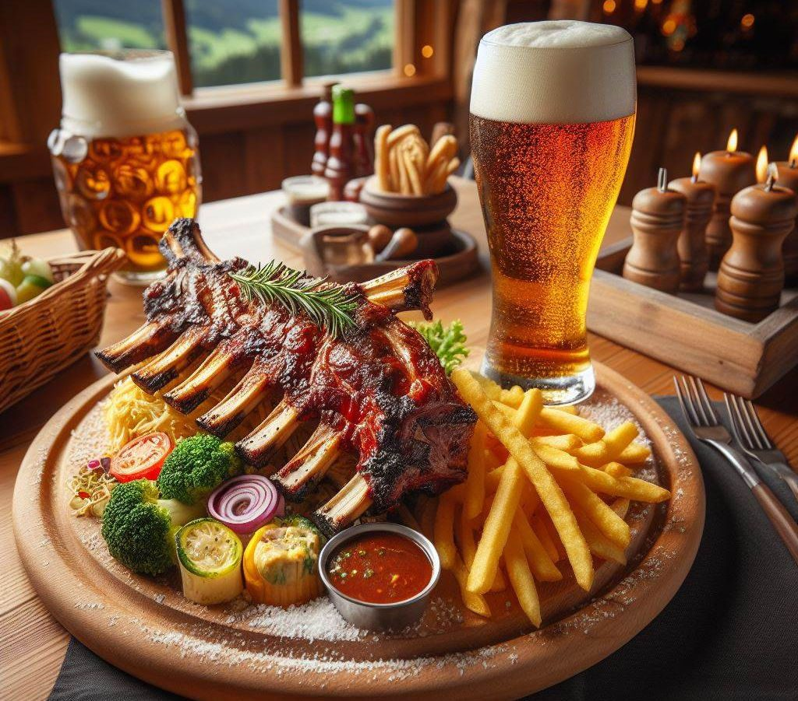

Freitag ab 18 Uhr
Ripperl-Abend
Ab sofort gibt es jeden Freitag ab 18:00 Uhr Ripperl. Ein Fixpunkt für Stammgäste — Reservierung empfohlen.
Klassische Hausmannskost zu moderaten Preisen, täglich frische Mittagsmenüs und saisonale Schmankerl. Bei unseren Speisen bevorzugen wir frische Produkte aus der Region.
Reisegruppen und Busse bitte vorab anmelden — wir bereiten die Stube dann für Sie vor.
Mittagsmenü, Wochenempfehlungen und die saisonalen Gerichte wechseln laufend. Die aktuellen Gerichte und Preise erfahren Sie telefonisch unter +43 7612 64262 — oder Sie lassen sich den Menüplan jede Woche per E-Mail schicken.

Ab sofort gibt es jeden Freitag ab 18:00 Uhr Ripperl. Ein Fixpunkt für Stammgäste — Reservierung empfohlen.
Bei Schönwetter grillen wir im Juli und August jeden Freitag im schattigen Gastgarten. Rund 100 Plätze, Spielplatz direkt daneben.
Wenn die Tage länger werden und der Traunsee im klaren Morgenlicht glitzert, servieren wir hausgemachte Kräuterknödel mit jungem Blattspinat, zarten Frühlingskräutern und sautiertem Gemüse aus den Gärten rund um Gmunden — verfeinert mit einem Hauch Bärlauch und frischem Zitronenöl.
„Das Zipfer Märzen wird unter der Erde zur Zapfanlage im Gasthof befördert — es hat nur die feinperlende, biereigene Kohlensäure. Dieses Bier ist deshalb auch sehr süffig und bei unseren Gästen sehr beliebt.“
Die Kegelbahnen haben eine eigene Schankanlage — das Bier ist also auch dort immer frisch gezapft.
Auch für unsere kleinen Gäste haben wir einiges zu bieten. Egal ob „Pumuckl“-Schnitzel, „Biene Maja“-Würstel oder „Mobby Dig“-Fischstäbchen: Nach der Stärkung geht’s ab auf den Kinderspielplatz. Der liegt direkt neben dem schattigen Gastgarten, damit Sie Ihre Kleinen immer im Blickfeld haben.